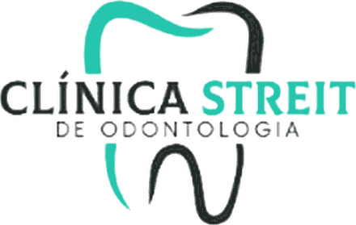

Quatro paletas para o novo site.
É o mesmo site em quatro combinações de cor. Abra, navegue até o fim e volte aqui para ver a próxima.
- Versão A atual Fundo preto com detalhes em dourado, na identidade da campanha Streit Experience. Abrir versão A
- Versão B Fundo preto com detalhes no verde-turquesa da logo da clínica. Abrir versão B
- Versão C Fundo branco com detalhes em verde-turquesa: mais leve e clínico. Abrir versão C
- Versão D Fundo bege com detalhes em dourado: acolhedor, com ar de consultório premium. Abrir versão D
Proposta preparada pela Veyroni.